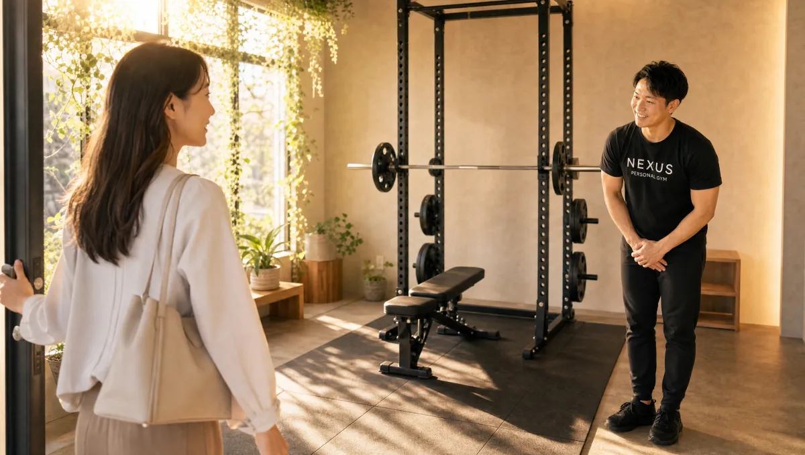

Price料金プラン
ライト
30分 / 月4回
¥18,000/月
1回 4,500円（税込）
人気No.1
ベーシック
60分 / 月4回
¥34,000/月
1回 8,500円（税込）
プレミアム
90分 / 月4回
¥48,000/月
1回 12,000円（税込）
セミパーソナル
60分 / 月2回・2名
¥11,000/月
1回 5,500円（税込）
入会金は通常55,000円、無料体験当日入会で15,000円（税込）に割引。全店舗共通の料金です。
Reviewsお客様の声 ← スワイプ
5.0★★★★★Google口コミ 102件（2026年7月時点）
Google口コミより
★★★★★
心地よい距離感で、完全個室だから女性でも通いやすい。
乃木坂・赤坂店の女性会員
Google口コミより
★★★★★
夫婦で入会。丁寧で話しやすく、二人とも無理なく続けています。
ご夫婦で利用
Google口コミより
★★★★★
半年でベンチプレス90kg達成。手ぶらで仕事帰りに通えて便利。
30代男性・通って半年
実際のGoogle口コミを要約して掲載。口コミをすべて見る（Googleマップ）
The Studioこの店舗の特徴
看板のない完全個室。人目を気にせず、こっそり綺麗になれます。

Access Route乃木坂駅からのアクセス
東京メトロ千代田線 乃木坂駅・赤坂駅が最寄りです。港区にある完全個室の隠れ家ジムで、駅から徒歩圏内。大きな看板を出していないため、初めての方には無料体験のご予約時にLINEで分かりやすい順路をご案内します（〒107-0052 東京都港区赤坂8-12-16 NOZY赤坂601）。
Accessアクセス
- 店舗名
- NEXUSパーソナルジム 乃木坂・赤坂店
- 住所
- 〒107-0052
東京都港区赤坂8-12-16 NOZY赤坂601 - 最寄り駅
- 東京メトロ千代田線 乃木坂駅・赤坂駅
- 営業時間
- 8:00〜23:00（不定休）
- 電話番号
- 050-1790-8488
FAQ乃木坂・赤坂店のよくある質問
Q乃木坂・赤坂店はどこにありますか？最寄り駅は？+
住所は〒107-0052 東京都港区赤坂8-12-16 NOZY赤坂601です。最寄りは東京メトロ千代田線の乃木坂駅・赤坂駅。港区の住宅街のマンションの一室にある、大きな看板のない隠れ家パーソナルジムです。
Q乃木坂・赤坂エリアで初心者向けのパーソナルジムを探しています。+
乃木坂・赤坂店は、運動が初めての30〜40代女性が中心の店舗です。会員の約6割が運動経験ほぼゼロからのスタート。完全個室でトレーナーがマンツーマン指導するので、周りの目を気にせず自分のペースで始められます。
Q乃木坂・赤坂で完全個室のパーソナルジムはありますか？+
はい。乃木坂・赤坂店は港区の住宅街のマンションの一室にある完全個室のパーソナルジムです。すっぴん・部屋着感覚で通っても他の会員に会うことがなく、人目を気にせずトレーニングに集中できます。
Q乃木坂・赤坂店の営業時間は？仕事帰りでも通えますか？+
営業時間は8:00〜23:00（不定休）です。朝の出勤前も、仕事帰りの夜間も通えます。手ぶら通いOKなので、バッグひとつで立ち寄れます。
Q乃木坂・赤坂店の予約はどうやって取りますか？+
まずはWEBから無料体験をご予約ください。体験ではカウンセリング・姿勢チェック・実際のトレーニングを行います。入会後の各セッションも予約制で、6時間前まで無料でキャンセル・変更が可能です。
Q乃木坂・赤坂周辺で女性が通いやすいジムを探しています。+
乃木坂・赤坂店は女性会員85%。港区の住宅街にあり、乃木坂・赤坂エリアにお住まい・お勤めの女性がこっそり通っています。完全個室・手ぶらOKで、女性が通いやすい環境を整えています。
Q乃木坂・赤坂店の周辺には何がありますか？+
エリアには国立新美術館、東京ミッドタウン、赤坂サカスなどがあります。港区の落ち着いた住宅街に位置する、看板を控えめにした隠れ家ジムです。
よくある質問（全店共通）
料金・制度などNEXUS全店に共通するご質問です。さらに詳しくは110問のFAQをご覧ください。
Q料金はいくらですか？+
ライト（30分）月4回18,000円〜、ベーシック（60分）月4回34,000円〜など。1回あたり4,500円〜から始められます（すべて税込）。詳しくは料金プランをご覧ください。
Q手ぶらで通えますか？+
はい。ウェア・水・タオル・プロテインまで無料提供で手ぶら通いOK。仕事帰りにバッグひとつで通えます。
Qキャンセルはいつまでできますか？+
6時間前まで無料でキャンセル・変更が可能です。当日の急な体調不良やお子さまの発熱にも対応しやすい設計です。
Q食事指導はありますか？+
月額3,000円（税込）のAI食事指導があります。写真を送るだけで、無理を強いない範囲で痩せる食べ方をサポートします。
Qトレーナーはどんな人ですか？+
全トレーナーが3ヶ月の厳しい自社教育プログラムを修了してからデビュー。「優しく寄り添う指導」を全店共通の基準としています。
Q女性会員は多いですか？+
女性会員比率は85%です。30〜40代女性を中心に、運動初心者の方が多く通っています。
Q体験の流れは？+
無料体験は60分程度。カウンセリング → 姿勢チェック → トレーニング体験の流れです。当日入会で入会金が55,000円→15,000円（税込）に割引されます。
NEXUSパーソナルジムの特徴・料金をもっと見る